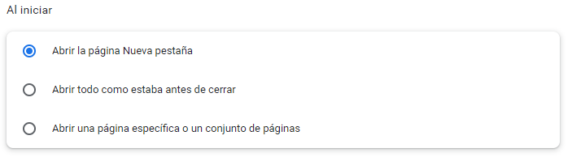
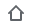
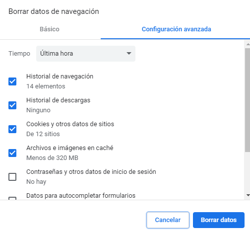

Cómo configurar el navegador Chrome
Gestión de cuentas
Si has iniciado sesión con una cuenta de Google, verás un icono con tus iniciales o tu imagen de perfil en la parte superior derecha de la ventana del navegador. Si colocas el cursor sobre tu imagen de perfil o tus iniciales, se mostrará la cuenta de correo electrónico con la que has iniciado sesión, que puede terminar en "@gmail.com", si es una cuenta personal de Google; o terminar en la dirección de tu dominio (@tuempresa.com), si se trata de una cuenta de Google Workspace (servicio de Google orientado a empresas).
Si no has iniciado sesión, se mostrará este icono .
- Crear perfiles: sirve para cambiar entre tu cuenta de trabajo y tus otras cuentas de Google (como cuentas personales) sin tener que cerrar sesión cada vez. Para añadir un perfil, pulsa en la parte superior derecha, en el icono de tu perfil y luego en Añadir. Si pulsas en la rueda podrás gestionar eliminar o editar los perfiles que ya tengas, e incluso añadir nuevos.
-
Quitar un perfil elimina de tu ordenador información como marcadores, historial, contraseñas y ajustes.
-
Modo invitado: usa este modo cuando quieras que otras personas usen tu ordenador o, al contrario, cuando uses tú el pc de otras personas. También es útil cuando estés usando un ordenador público, por ejemplo, en una biblioteca. En este modo no puedes ver ni cambiar la información del perfil de otros usuarios y al cerrar la ventana del navegador toda tu historial de navegación, las cookies y los datos de sitios web se eliminarán del ordenador.
-
Activar sincronización: guarda la información (marcadores, historial, contraseñas,...) en tu cuenta de Google. Actívala solo en los dispositivos que te pertenezcan, si utilizas un ordenador público, usa el modo invitado. Si la sincronización está activa, puedes iniciar sesión automáticamente en Gmail y otros servicios de Google. También te permite recuperar en otro dispositivo la información sincronizada.
Definir la página de inicio
Al abrir Chrome nos aparece la página de inicio. Podemos configurar esta haciendo clic en el botón de la esquina superior derecha y luego en Configuración. En el panel de la izquierda, hacemos clic en la sección Al iniciar. Nos aparecen varias opciones:

En la tercera opción podemos especificar qué página(s) queremos abrir. Para quitar o editar una página, basta con hacer clic en el menú de los tres puntos.
Puedes personalizar el navegador Chrome para que muestre las páginas que quieras como página principal o de inicio.
Definir la página principal:
En la parte superior derecha del navegador Chrome, haz clic en el menú de los tres puntos > Configuración y en el panel de la izquierda Aspecto.
Activa la opción: Mostrar el botón de página principal. Al hacerlo nos aparece este icono  a la izquierda de la barra de direcciones.
Elige una opción: Para indicar una página personalizada, selecciona Introduce una dirección web personalizada e introduce una URL.
Para abrir una nueva pestaña, selecciona Página Nueva pestaña.
Eliminar datos de navegación
En el navegador, en la parte superior derecha, haz clic en los tres puntos > Más herramientas > Borrar datos de navegación.

En función del contenido que quieras borrar, selecciona la pestaña Básico o Configuración avanzada y, a continuación, un intervalo de tiempo para borrar los datos, como Última hora o Desde siempre. Elige los datos que quieras eliminar y haz clic en Borrar datos.
Descargas
En la parte superior derecha del navegador Chrome, haz clic en el menú de los tres puntos > Configuración y en el panel de la izquierda Descargas. Aquí podemos elegir la carpeta por defecto donde se guardarán los archivos que descarguemos de Internet, o bien, decir que nos pregunten dónde queremos guardar la descarga cada vez que realicemos una.
.